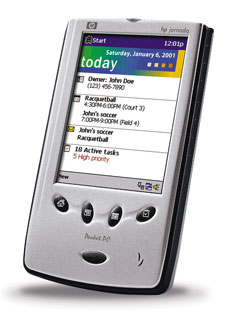
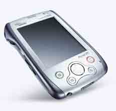
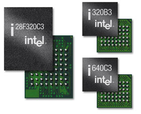

Андрей Борзенко
ИТ-компании, которым удается преодолеть периоды экономического спада и сохранить сильные позиции, как правило, добиваются этого благодаря приверженности новаторским технологиям, а не за счет экономии или замораживания своей деятельности. Возможно, именно поэтому корпорация Intel (http://www.intel.com) продолжает расходовать значительные суммы на исследования и производство, причем эти расходы сконцентрированы в четырех ключевых областях, где Intel выступает как поставщик полупроводниковых компонентов - строительных блоков Интернет-экономики. Так, в текущем году на НИОКР корпорация планирует израсходовать около 4,1 млрд долл. (т. е. на 300 млн долл. больше прошлогоднего), и еще 5,5 млрд долл., как ожидается, составят капитальные затраты.
Эксперты полагают, что Интернет будет и дальше выступать в качестве движущей силы развития индустрии. Продолжается его проникновение во все сферы жизни и связанное с этим все более широкое развертывание электронного бизнеса. Компании, которые инвестируют в ИТ-инфраструктуры - как корпоративные, так и телекоммуникационные сети общего доступа, в свою очередь, обеспечивают развитие Интернета и порожденных им приложений. Можно сказать, что в общемировом масштабе развитие Сети еще только начинается.
Основное направление деятельности Intel - это проектирование и производство сложных полупроводниковых устройств, а также разработка и продвижение лежащих в их основе архитектур. Исходя из поставленных целей, корпорация разработала архитектуры для каждой из областей, где ее полупроводниковые компоненты используются при создании сетей следующего поколения: настольные ПК и серверы начального/среднего уровня (Intel Architecture 32, IA-32); суперсерверы и серверы баз данных (Intel Architecture 64, IA-64); сетевая инфраструктура (Internet Exchange Architecture, IXA) и архитектура персональных клиентских устройств (Personal Internet Client Architecture, PCA).
Беспроводные технологии
Беспроводные технологии могут обеспечить пользователям гибкость, необходимую и для работы, и в повседневной жизни, только в том случае, если они дают все, что может дать беспроводная связь, и даже больше. Продолжительный срок службы батарей, высокая производительность, защищенность, быстродействие и безопасность передачи данных - чрезвычайно важные параметры, равно как масса и портативность электронного устройства. Новые модели приборов для беспроводной связи начинают оснащаться современными функциями поддержки потоковой передачи звука, видео и данных.
Расширение возможностей беспроводных устройств призвано сыграть ключевую роль в развитии Интернет-бизнеса. Общее число пользователей, применяющих мобильные устройства для обработки данных, оценивалось на конец 2001 г. более чем в 720 млн человек по всему миру. По данным Meta Group, к 2003 г. транзакции, осуществляемые с помощью беспроводных средств, составят почти пятую часть совокупного товарооборота между предприятиями и 25% общего объема реализации товаров и услуг на потребительском рынке.
Разумеется, революционное влияние беспроводных технологий проявляется не только в увеличении типов потребительских приложений, но и в многообразии типов устройств, обеспечивающих доставку пользователям Интернет-контента. В настоящее время для беспроводной связи с Интернетом используется множество различных изделий - персональные электронные секретари (PDA), интеллектуальные телефонные аппараты, сверхпортативные Web-терминалы и устройства, предоставляющие доступ в Интернет. Стоит отметить, что мобильные телефоны и PDA - это специализированные устройства, выполняющие только определенные задачи. В частности, они не обеспечивают особых возможностей визуализации (из-за небольших размеров), равно как и не способны стать основным источником информации или средством связи, таким, как обычный ПК. Телефоны и PDA, возможно, станут наиболее популярными устройствами, но тем не менее в течение нескольких последующих лет на рынке, несомненно, будут появляться и новые беспроводные Интернет-устройства.
Двигателем развития беспроводного Интернета служат такие новые технологии, как системы поколений 2,5 (General Packet Radio System, или GPRS) и 3 (Universal Mobile Telecommunications System, или UMTS) и новых мировых стандартов широкополосного доступа. С появлением технологии GPRS организация доступа в Интернет по принципу "всегда включен, всегда подключен" становится реальностью, а расширение пропускной способности позволяет работать с более насыщенным контентом. Все эти возможности должны сочетаться с достаточной вычислительной мощностью для поддержки более сложных приложений и потоковой передачи мультимедийных данных, а также с масштабируемостью немодулированных сетей.
Компания Intel выступает за использование открытых промышленных стандартов в целях продвижения новых технологических разработок и стимулирования развития рынка, и этот принцип в равной мере применим к рынку беспроводных коммуникаций. Корпорация работает над тем, чтобы беспроводные технологии были доступны пользователям повсеместно.
Сегодня, в условиях массовой популярности идеи беспроводного Интернета, Intel готова поставлять технологии и компоненты, необходимые производителям устройств, поставщикам контента и операторам для быстрой разработки и реализации новых продуктов и услуг. Подразделение беспроводной связи и беспроводных вычислений (Wireless Communications & Computing Group, WCCG) корпорации активно занимается изучением возможностей сотовой связи и беспроводных клиентских вычислительных устройств. Например, концепция беспроводного Интернета на одной микросхеме (Wireless Internet on a Chip) была анонсирована Intel весной 2001 г., а процессоры для коммуникационных сетей поколения 2,5 на основе технологии появятся уже в этом году. В настоящее время Intel занимает ведущие позиции по объему поставок микросхем флэш-памяти для беспроводных телефонов, снабжая рынок беспроводных и Интернет-устройств такими ключевыми компонентами, как процессоры для производства вычислений, немодулированной передачи данных, обработки сигналов.
Строительные блоки Intel PCA
Архитектура персональных клиентских узлов Интернета (Personal Internet Client Architecture, PCA) была разработана для ускорения продвижения на рынок нового поколения устройств беспроводного Интернета и обеспечения уровня мощности, необходимого для поддержки современных приложений. Новая архитектура ускоряет и упрощает процесс разработки аппаратных и программных средств, способных работать в параллельном режиме в отличие от ныне применяемого, весьма медленного режима последовательного исполнения. Это позволяет независимым разработчикам ПО создавать новые приложения с применением стандартного API, используемого в широком спектре беспроводных клиентских устройств.
За последнее время архитектура Intel PCA завоевала в отрасли широкую популярность - ее поддерживают многие OEM-производители оборудования, операторы связи, независимые поставщики ПО по всему миру. Так, Intel сотрудничает с финской компанией Sonera, вкладывая средства в развитие фирм-производителей оборудования и поставщиков услуг на основе платформы Intel PCA. Совместно с британской British Telecom Intel участвует в лабораторных разработках приложений и услуг следующего поколения, а IBM сотрудничает с Intel в организации поставок промежуточного ПО IBM WebSphere для платформы Intel PCA. В числе производителей и разработчиков, принявших на вооружение архитектуру Intel PCA, следует отметить такие компании, как Compaq, Hewlett-Packard, Symbian и Telefonica. В августе 2001 г. Intel объявила о создании организации разработчиков компьютерных и сетевых средств на основе архитектуры PCA (Intel PCA Developer Network) и начала оказывать им проектно-конструкторскую, техническую и маркетинговую поддержку. На данный момент уже более 600 компаний присоединились к этой сети и пользуются доступом более чем к 400 инструментам для разработки программного и аппаратного обеспечения.
В основе беспроводной продукции Intel лежат три стержневые технологии: архитектура Intel XScale для обработки приложений, архитектура Intel Micro Signal Architecture для обработки сигналов и флэш-память для беспроводных устройств Intel Wireless Flash Memory. Эти технологии оптимизированы с тем, чтобы обеспечивать более высокую производительность и низкое энергопотребление именно в беспроводных устройствах.
Intel XScale
Подписав лицензионное соглашение с компанией Advanced RISC Machines (ARM), Intel получила возможность заниматься производством, продажей и модификацией семейства микропроцессоров StrongARM. Данный процессор, разработанный в компании Digital Semiconductor, стал собственностью Intel после заключения соглашения между двумя компаниями. Благодаря изменениям в архитектуре эти процессоры приобрели большую производительность и более низкий уровень потребления энергии, что дало возможность производителям аппаратного обеспечения создать на их основе карманные компьютеры, способные выполнять приложения работы с речью и даже воспроизводить видеоклипы в формате MPEG. В частности, корпорация начала использовать алгоритм работы с кэш-памятью с обратной записью вместо сквозной записи.
В прошлом году ряд ведущих производителей устройств типа PDA выбрали процессор Intel StrongARM SA-1110 в качестве основы коммуникационных средств следующего поколения. Такие компании, как Compaq, Hewlett-Packard и Symbol Technologies, тем самым еще раз подтвердили свою приверженность давнему и тесному сотрудничеству с Intel, а Casio, NEC и Toshiba, впервые остановившие свой выбор на этих процессорах, объяснили принятое решение высоким уровнем производительности и низким энергопотреблением процессоров StrongARM.
При работе в обычном режиме рассеиваемая мощность процессора SA-1110 составляет менее половины ватта, что резко продлевает срок службы батарей без ущерба производительности наладонных устройств, способных обеспечить просмотр графических объектов, запись и воспроизведение видео- и аудиоматериалов, распознавание речи и рукописного текста, бесперебойную работу таких приложений бизнес-класса, как персональные системы управления информацией, текстовые редакторы и электронные таблицы.
|  | КПК на базе StrongARM.
|
В 2000 г. была анонсирована архитектура Intel XScale, основанная на ядре StrongARM, которая обеспечивает высокий уровень производительности, необходимый для особо сложных вычислений, в сочетании с низким энергопотреблением, что особо важно при работе с приложениями, насыщенными мультимедийными средствами. Ядро архитектуры XScale обладает энергопотреблением в диапазоне от 0,0001 до 1,6 Вт и может работать с тактовыми частотами, приближающимися к 1 ГГц. Она содержит расширения, позволяющие уменьшить объем программного кода и добавить функции обработки цифровых сигналов. Благодаря такому сочетанию архитектура Intel XScale очень хорошо подходит для портативных наладонных устройств, для которых срок службы батарей критически важен. Одновременно новая платформа служит прекрасной основой для телематических систем, объединяющих средства связи и вычислительную технику.
Эта архитектура будет использоваться в качестве основы семейства процессоров Intel, которое будут применяться не только в персональных цифровых помощниках, сотовых телефонах с Интернет-доступом, но и в сетевых устройствах хранения, маршрутизаторах и коммутаторах.
В настоящее время объявлены процессоры с применением технологии XScale двух видов: PXA250 (Cotulla) и PXA210 (Sabinal). Модели семейства PXA250 с тактовой частотой 200, 300 и 400 МГц предназначены для рынка карманных ПК. Тактовая частота моделей PXA210 (133 и 200 МГц) ниже, чем у процессоров Intel StrongARM, и они будут применяться в простейших КПК и сотовых телефонах.
|  | КПК на базе PXA250.
|
Изделия с новыми процессорами смогут выполнять программы, написанные для устройств на базе процессора StrongARM SA-1110, таких, как iPaq от Compaq Computer и Jornada от Hewlett-Packard. Оба новых процессора снабжены встроенной кэш-памятью емкостью 64 Кбайт, контроллером памяти, контроллером ЖК-дисплея и контроллером расширительного слота, что позволяет уменьшить потребляемую мощность. Процессор PXA250 содержит программу управления питанием, оптимизирующую работу кристалла таким образом, что для каждой решаемой задачи он использует лишь строго необходимое количество энергии. Обе микросхемы могут экономить от четверти до трех четвертей энергии по сравнению со StrongARM SA-1110. Кроме того, PXA250 поддерживает расширительные платы Secure Digital и CompactFlash, а PXA210 - только платы Secure Digital. Напомним, что StrongARM SA-1110 имеет встроенную кэш-память емкостью 24 Кбайт и работает с тактовой частотой 206 МГц.
На рынке процессоров для карманных ПК Intel конкурирует с фирмами Texas Instruments и Motorola. Эксперты считают, что, если обещания Intel по поводу экономичности оправдаются, компания получит заметное преимущество в данном секторе рынка. Есть информация, что устройства на базе процессора StrongARM SA-1110 будут выпускаться по крайней мере до конца этого года.
Используя процессоры, основанные на архитектуре XScale, производители могут создавать карманные компьютеры и мобильные телефоны, поддерживающие не только традиционные функции органайзера, но и возможности беспроводного доступа в Интернет и воспроизведения "живого" видео. Но возможны и иные применения. Ожидается, что к 2006 г. число автомобилей, оборудованных модулями беспроводной связи и модемами, достигнет 100 млн. Intel получила широкую поддержку поставщиков ПО в сфере автомобильной промышленности, которые намерены использовать в своих разработках процессоры StrongARM и процессоры на базе архитектуры Intel XScale. Созданный корпорацией проектно-конструкторский центр по телематике, функционирующий в Интернете, предоставляет инструментальную и техническую поддержку разработчикам навигационных приборов, мультимедийных средств, мобильных телефонных аппаратов, не требующих ручного управления, других автомобильных Интернет-устройств и приложений.
Сигнальные процессоры
Перед операторами мобильной связи стоит задача обеспечить телефонным трубкам мощность, достаточную для работы в новых высокоскоростных сетях стандарта UMTS. Решению именно этой задачи призваны способствовать разработанные Intel процессоры для обработки цифровых сигналов (Digital Signal Processors, DSP) и микросигнальная архитектура (Micro Signal Architecture, MSA). Процессоры DSP, встроенные, например, в мобильные телефонные трубки, КПК и цифровые камеры, способны обрабатывать голосовые и графические сигналы в режиме реального времени. Решающую роль в проектировании процессоров DSP, обусловленную их применением в мобильных устройствах, играют, разумеется, такие факторы, как габариты и масса, однако немаловажен и срок службы батарей, который резко повышается благодаря впервые примененной технологии динамического управления режимом электропитания (Dynamic Power Management, DPM).
Кроме того, кристалл способен обрабатывать данные в потоковом режиме, что особенно важно для насыщенных мультимедийными средствами приложений, запускаемых на оборудовании с батарейным питанием. Тактовая частота процессоров Intel DSP составляет 400 МГц, что более чем вдвое превышает быстродействие аналогичных процессоров, предназначенных для беспроводных устройств. Разработчики полагают, что ядро процессора может обеспечить работу с тактовой частотой до 1 ГГц. Архитектура MSA включает ряд новых функций, в частности, новый набор мультимедийных инструкций, который позволит повысить производительность в 6-10 раз, и новую технологию управления питанием, позволяющую снижать потребляемую энергию, уменьшая тактовую частоту процессора. Для разработчиков предлагаются компилятор, эмулятор, отладчик и ассемблер (ПО ADI VisualDSP++).
Хотя MSA интегрирует технологии двух компаний - Intel и Analog Devices, они не намерены объединять свои планы выпуска продуктов. Если Analog Devices ориентируется на рынок автономных цифровых процессоров сигналов, то Intel сосредоточится на новых беспроводных устройствах с подсистемами памяти, вычислений и коммуникаций.
Флэш-память
Поскольку приложения для работы с Интернетом и большими объемами данных все теснее интегрируются с сотовыми телефонами, для работы этих приложений в телефонах требуются все более сложные и высокоемкие микросхемы флэш-памяти. Кроме того, подобные микросхемы должны потреблять мало энергии и быть небольшими по размеру. Эти меры позволяют продлить срок службы батарей сотовых телефонов и сохранить компактность их корпусов.
Как известно, Intel - ведущий поставщик флэш-памяти. За несколько лет объем поставленных микросхем StrataFlash превысил 2 млрд Мбит, а в текущем году эта цифра, как ожидается, удвоится. Только в 2001 г. мобильные телефонные аппараты, КПК, компьютерные приставки к телевизору и другие устройства, оснащенные модулями флэш-памяти StrataFlash, завоевали свыше 650 наград за удачные конструкторские решения.
В прошлом году Intel представила микросхему, выполненную с использованием разработанной ею многоуровневой сотовой технологии (Multi-Level Cell, MLC) третьего поколения (благодаря которой емкость каждой ячейки увеличивается вдвое) и с соблюдением проектных норм 0,18 мкм. Продукция семейства StrataFlash, впервые выпущенная в 1997 г., представляет собой высокоэкономичное решение для выполнения программного кода и записи-считывания данных на одном кристалле.
Высокая скорость считывания данных позволяет выполнять программный код приложений, загружаемый непосредственно из флэш-памяти вместо ОЗУ, тем самым снижая потребность в дополнительной емкости дорогостоящей оперативной памяти и в крупногабаритных системных платах. Скорость считывания данных возрастает еще больше за счет применения в микросхемах синхронной флэш-памяти StrataFlash потокового режима обмена данными с частотой 66 МГц, что увеличивает пропускную способность до 92 Мбит/с - а это в четыре раза превышает показатели быстродействия обычной асинхронной флэш-памяти. Для устройств, не поддерживающих режим синхронного потокового обмена данными, предусмотрен постраничный режим из восьми слов, который более чем вдвое повышает скорость считывания данных. Микросхемы синхронной флэш-памяти StrataFlash, ядро которых использует напряжение 3 В, выпускаются в двух вариантах подсистемы ввода-вывода с напряжением питания 3 и 1,8 В.
Микросхемы StrataFlash можно применять в сочетании с разработанным Intel ПО для обслуживания флэш-памяти, что повышает производительность устройств и сокращает сроки их выпуска на рынок. К примеру, утилита Intel Persistent Storage Manager упрощает проектирование переносных устройств под управлением ОС Windows CE благодаря тому, что операции выполнения программного кода, сохранения файлов и записи-считывания данных объединены в одной микросхеме. Программный пакет Intel Flash Data Integrator предоставляет аналогичные возможности сотовым телефонным аппаратам.
|  |
| Микросхемы флэш-памяти.
|
В октябре 2001 г. Intel представила первую в отрасли микросхему флэш-памяти Advanced+ Boot Block, созданную с учетом проектных норм 0,13 мкм и рассчитанную на напряжение 3 В (на сегодняшний день продано уже более 700 млн единиц продукции этого семейства). Производителям сотовых телефонов предлагается самая маленькая микросхема в мире емкостью 32 Мбит - она более чем в 200 раз меньше той, которую Intel впервые представила на рынке в середине 80-х годов. Технология производства позволит Intel выпускать микросхемы флэш-памяти емкостью до 512 Мбит. Заметим, что при соблюдении проектных норм 0,13 мкм используется самый быстрый в мире транзистор, самый маленький транзисторный затвор и самый тонкий подзатворный слой оксида. Такое сочетание позволяет создавать самые производительные в отрасли продукты с минимальным энергопотреблением. Усовершенствованная флэш-память загрузочного блока Advanced+ Boot Block с напряжением питания 3 В будет выпускаться в виде микросхем емкостью 32 и 64 Мбит.
В апреле этого года Intel представила самую производительную флэш-память для сотовых телефонов, а также новые методы изготовления корпусов микросхем флэш-памяти. Рассчитанная на напряжение 1,8 В новая флэш-память Intel Wireless Flash производится по 0,13-мкм производственной технологии и работает в четыре раза быстрее известных аналогов. Кроме того, новые микросхемы обладают меньшим энергопотреблением, что обеспечивает более длительное время работы телефонов без подзарядки батареи.
Новый метод изготовления корпусов микросхем существенно увеличивает производительность памяти в сотовых телефонах небольшого размера. В его основе лежит размещение нескольких высокоинтегрированных микросхем памяти и логических микросхем в общем корпусе, а также специальная укладка корпусов для реализации высокоуровневой интеграции кристаллов и увеличения их плотности на меньшей площади. Эффективность нового метода изготовления корпусов особенно важна для устройств малых форм-факторов - например, сотовых телефонов, требующих большого объема памяти, но с жестко ограниченным свободным местом на печатной плате.
Флэш-память Intel Wireless Flash на 1,8 В будет выпускаться в виде микросхем емкостью 64 и 32 Мбит. Также в течение этого года начнется опытное производство микросхем емкостью 128 Мбит.
Объединяя усилия
Intel продолжает работать над созданием технологий и формированием стандартов беспроводных соединений для нужд бизнесменов и рядовых пользователей. Так, Intel Wireless Competence Center, открытый в ноябре 1999 г. в Стокгольме, представляет собой глобальный центр развития коммуникационных технологий. Благодаря ему Intel и другие ведущие компании отрасли могут создавать технологии, ориентированные на предоставление пользователям широкого диапазона новых приложений, обслуживающих широкополосный беспроводной доступ в Интернет. Центр служит базой для подразделений Intel, занимающихся разработкой продукции по всему миру, и средством развития отношений Intel с другими лидерами компьютерной и коммуникационной индустрии.
Основанный Intel Фонд развития коммуникационных средств, чьи активы оцениваются в 500 млн долл., занимается инвестиционной деятельностью, способствующей развитию тех предприятий, которые поддерживают важнейшие программы Intel, в частности, инициативы PCA и XScale.